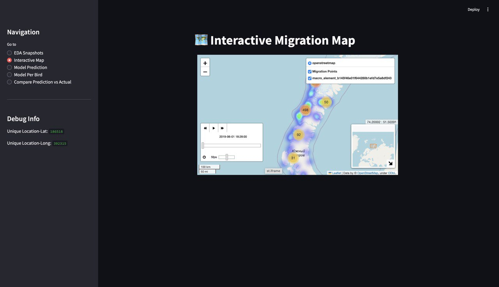
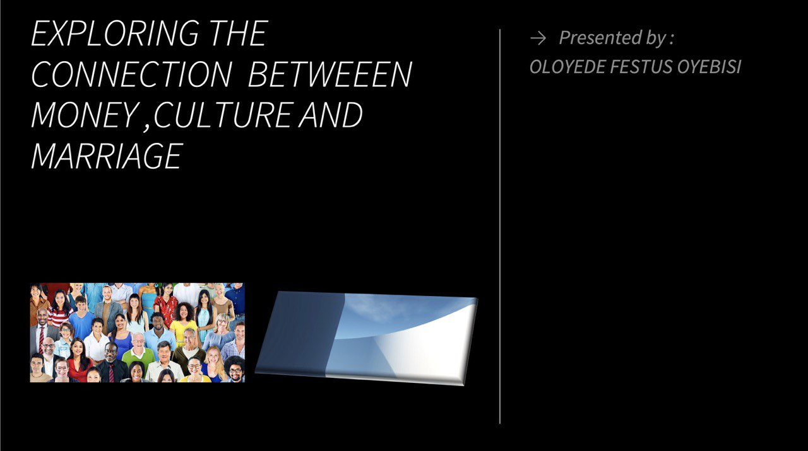
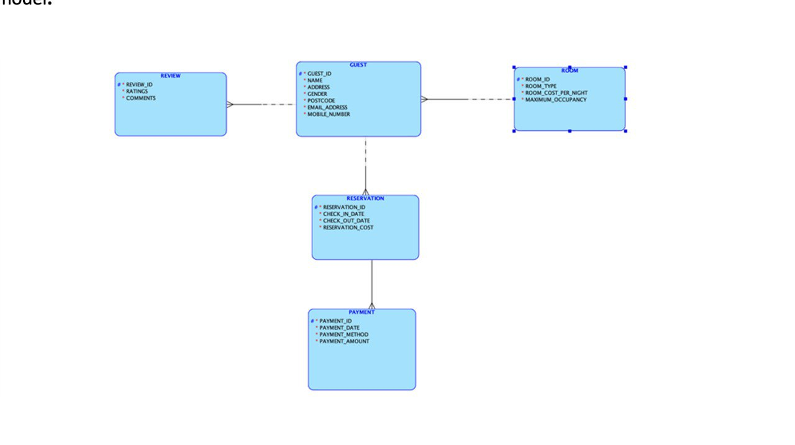
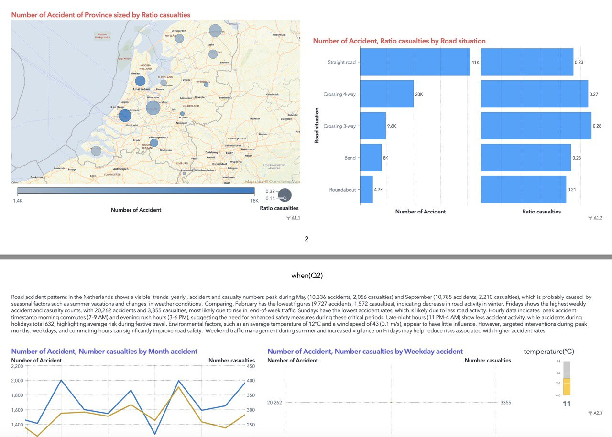
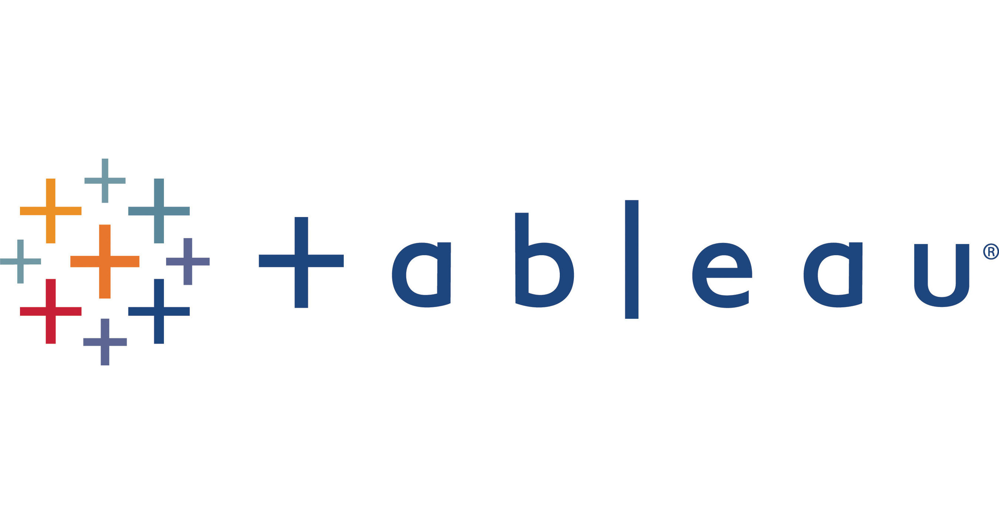

In this Project , I presented a data-driven approach to understanding and predicting the migratory patterns of the Taiga Goose (Anser fabalis) using machine learning techniques, The study was deployed through a Stream lit web application to allow interactive visualization and prediction of migration patterns.


In this project, i performed exploratory data analysis on a modified snapshot of data collected during a household census conducted in England in 2021 to derive insights about socio-economic conditions of the data subjects based on gender,income,level of education , ethnicity, marital status and housing conditions. I also created a powerpoint presentation outlining the insights derived from exploration in a relatable way to a layman.

In this Project, I designed an hotel information system using Oracle SQL Modeller.I then implement the database using Oracle LiveSQL.I also wrote some queries to derive insights from database and discusssed data security, intergrity and ethics.

In this project, I did a comprehensive analysis of casualities resulting from the traffic accidents in Netherland in 2016 , specifically to understand who the casualities involved were.

This holds all of my Tableau Dashboards.